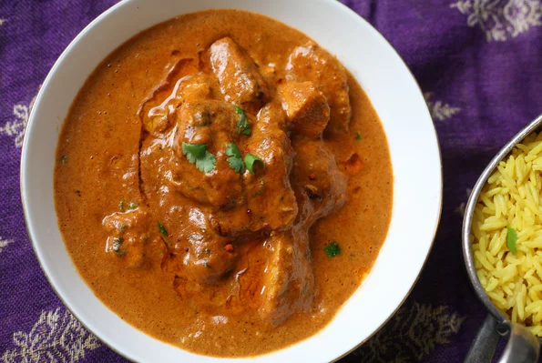

Chicken Tikka Masala

Description
This Indian chicken tikka masala is an easy but flavorful version of
everyone's favorite mild-medium curry! Serve with naan bread and mango
chutney. Garnish with additional cilantro leaves.
Ingredients
- 1 (14.5 ounce) can chopped tomatoes
- 4 tablespoons plain yogurt
- 2 cloves garlic, roughly chopped
- 1 (1 inch) piece ginger, coarsely chopped
- 2 tablespoons vegetable oil
- 1 onion, chopped
- 2 tablespoons masala curry paste
-
4 skinless, boneless chicken breasts, cut into 1-inch pieces
-
salt and freshly ground black pepper to taste
- ¼ cup water
- 1 tablespoon all-purpose flour
- 3 tablespoons chopped fresh cilantro
Steps
-
Combine tomatoes, yogurt, garlic, and ginger in a blender and process
until smooth.
-
Heat oil in a large frying pan over medium heat. Add onion and fry until
soft, 3 to 4 minutes, stirring constantly. Stir in curry paste and fry
until fragrant, 1 minute more, stirring once or twice. Add the tomato
mixture and chicken to the pan and mix together. Season with salt and
pepper. Remove pan from heat.
-
Mix water and flour together in a bowl. Stir into the chicken mixture in
the frying pan. Return pan to the heat and bring to a boil, stirring
constantly, about 5 minutes. Reduce heat to low, cover, and cook until
thickened, about 15 minutes more. Sprinkle with cilantro and serve
immediately.